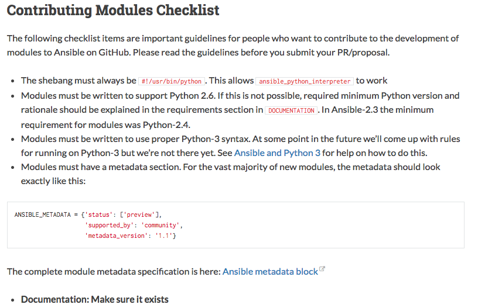
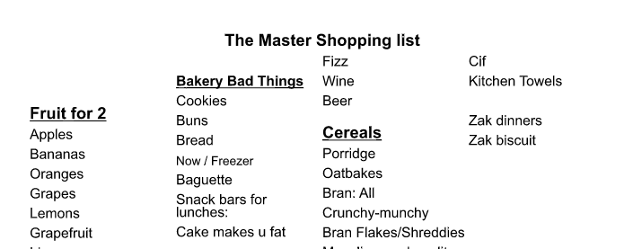
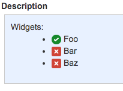
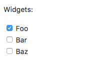

Ansible Checklists
Jonathan Burman & Adam Johnson
12 Oct 2017
What is a Checklist?
A type of informational job aid used to reduce failure by compensating for potential limits of human memory and attention. It helps to ensure consistency and completeness in carrying out a task.
Wikipedia
Talk
- ✅ What is a Checklist?
- ⏺ Use cases
- ⏺ Advantages
- ⏺ Techniques
- ⏺ Conclusion
Use cases
Pre-flight checklists
Use cases
Open source contributions
Use cases
Adam's first checklist
Talk
- ✅ What is a Checklist?
- ✅ Use cases
- ⏺ Advantages
- ⏺ Techniques
- ⏺ Conclusion
Advantages
- Reduce human error
- Knowledge sharing
- Planning first
- Reusable
- 3am Pager Duty
Talk
- ✅ What is a Checklist?
- ✅ Use cases
- ✅ Advantages
- ⏺ Techniques
- ⏺ Conclusion
Techniques
Ansible Playbooks are checklists
- name: apt package
apt:
pkg: nginx
- name: conf file
template:
src: etc_nginx_nginx.conf.j2
dest: /etc/nginx/nginx.conf
mode: 0644
owner: root
group: root
- name: 50x.html
copy:
src: 50x.html
dest: /usr/share/nginx/html/timeout-50x.html
Techniques
Ansible Playbooks are checklists
- If Ansible stopped working, you could manually execute your playbooks
- Ordered, unlike some other configuration management systems
Techniques
Ansible Playbooks can be manual checklists
- pause:
prompt: Log into the widgets dashboard
- pause:
prompt: Click 'foobar' and wait until it completes
Techniques
Ansible Playbooks can be manual checklists
- When a system ain't worth automating
 xkcd 1205
xkcd 1205 - Mix automated and manual steps in one process
Techniques
JIRA Tickets
Widgets: * (/) Foo * (x) Bar * (x) Baz
Techniques
GitHub Issues and PR's
Widgets: * [x] Foo * [ ] Bar * [ ] Baz
Talk
- ✅ What is a Checklist?
- ✅ Use cases
- ✅ Advantages
- ✅ Techniques
- ⏺ Conclusion
Conclusion
Chesley Sullenberger
Conclusion
“Not every situation can be foreseen or anticipated. There isn’t a checklist for everything.”
Chesley B. Sullenberger, Sully: My Search for What Really Matters
ansible web -m ping
Talk
- ✅ What is a Checklist?
- ✅ Use cases
- ✅ Advantages
- ✅ Techniques
- ✅ Conclusion
Thank you!
- Questions?
- Time Out is Hiring!!
- Slides: github.com/timeoutdigital/talk-ansible-checklists